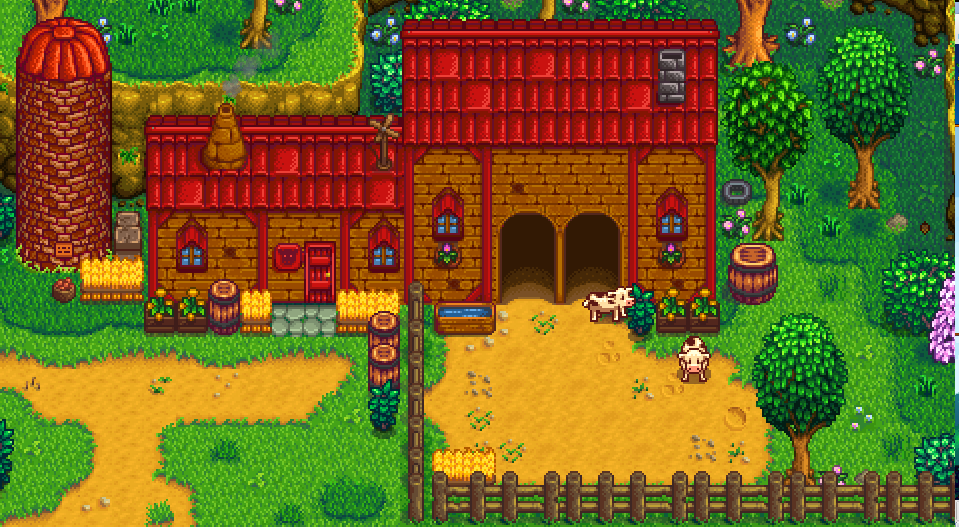
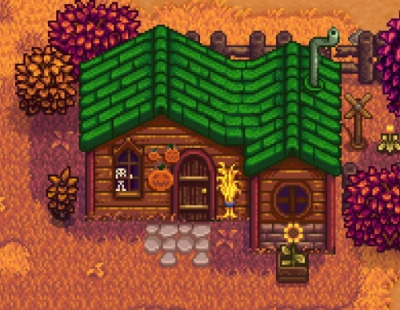

| Mines |
FestivalsEach season has two festivals. Mayor Lewis will send the player a letter in advance of each festival, describing when and where it will take place. On the day of the festival, a pop-up on left-hand side will let you know when the festival has begun. Marnie's Ranch Located in the northeast corner of the map, this is where you can purchase animals and animal related goods. Marnie lives here with her niece and nephew, Shane and Jas. Leah's Cottage Leah's Cottage is the home of Leah. It's located south of Marnie's Ranch and just south of the eastern passage to Pelican Town in Cindersap Forest, south of The Farm. The Player cannot enter without first gaining at least two friendship points with Leah. |